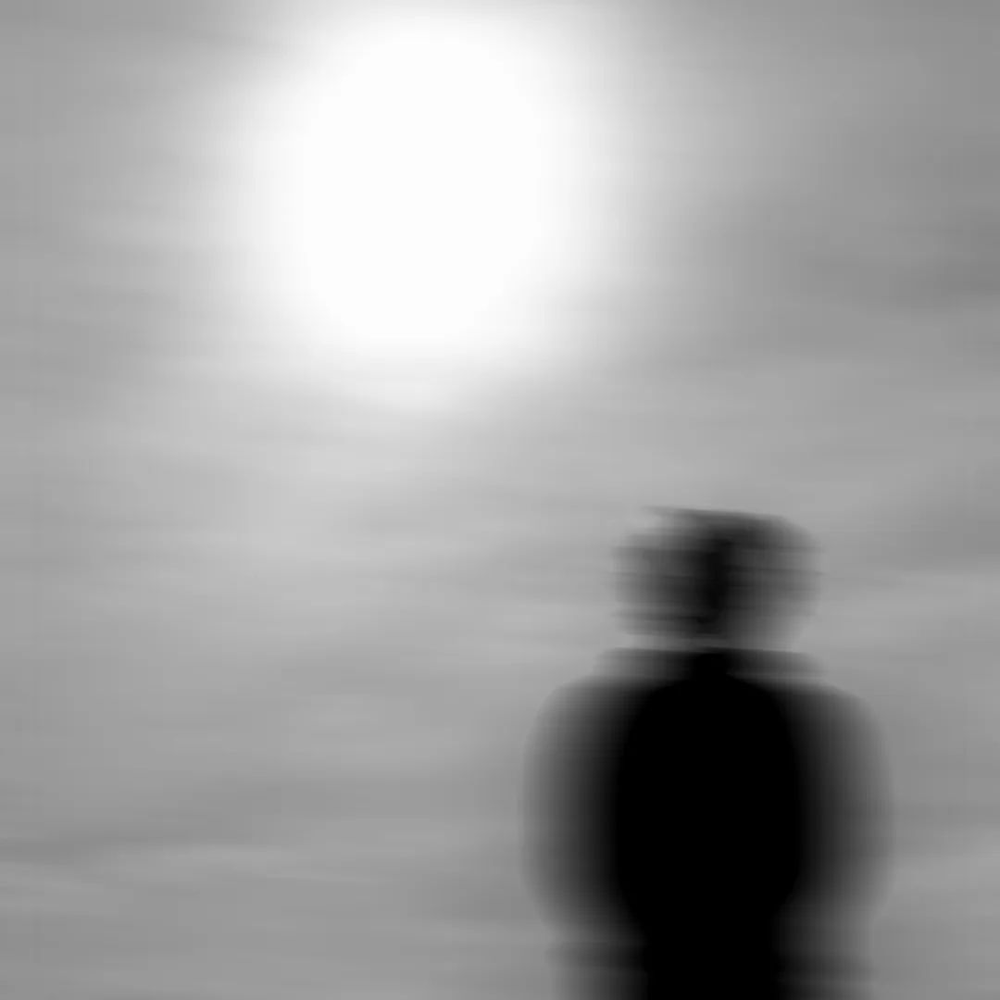

EN
Collatio is Máximo Signiorini's solo project, which seeks to explore sound through electronic and digital media
within genres such as Ambient, IDM and Techno.
Different themes lead the creative thread of the project, some
are concepts like the infinite, the constantly varying, the staticness, etc.
His work's have been showcased in
places like Under Club, Otra Historia, Audio Rebel (Brazil), Atom, Panda Rojo and Tres16.
ES
Collatio es el proyecto solista de Máximo Signiorini, donde se busca explorar el sonido a través de medios
electrónicos y digitales dentro de géneros como el Ambient, IDM y Tecno.
Distintas temáticas conducen el
hilo
creativo del proyecto, entre
ellas lo infinito, lo constantemente variante, lo estático, etc. Se ha presentado en lugares como Under Club,
Otra
Historia, Audio Rebel (Brasil), Atom, Panda Rojo y Tres16.